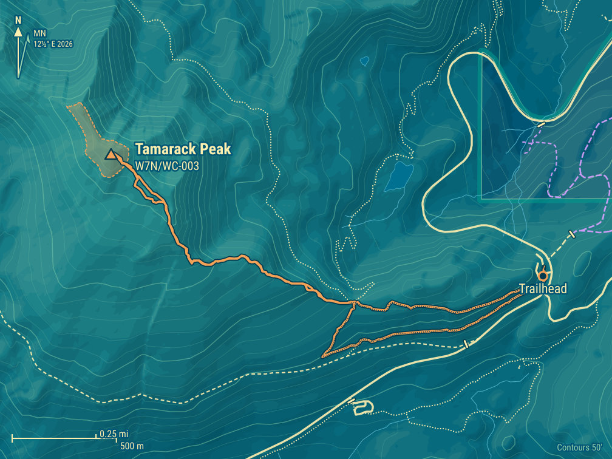
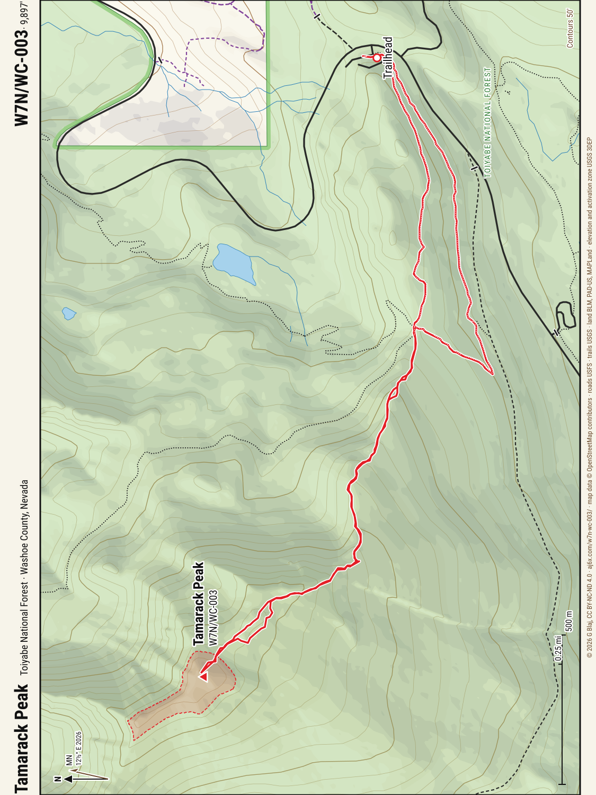
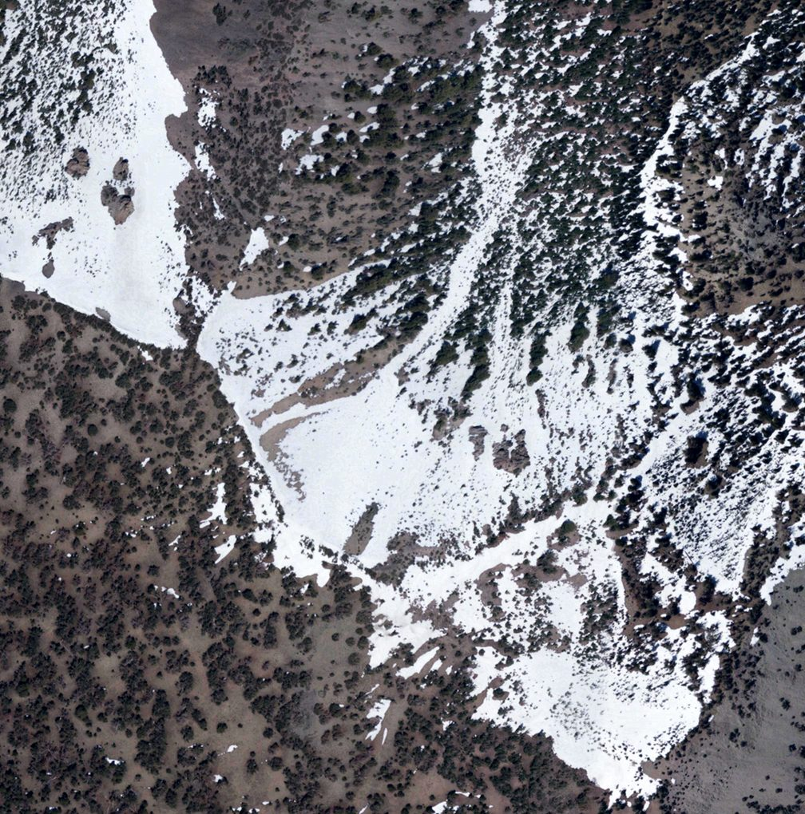
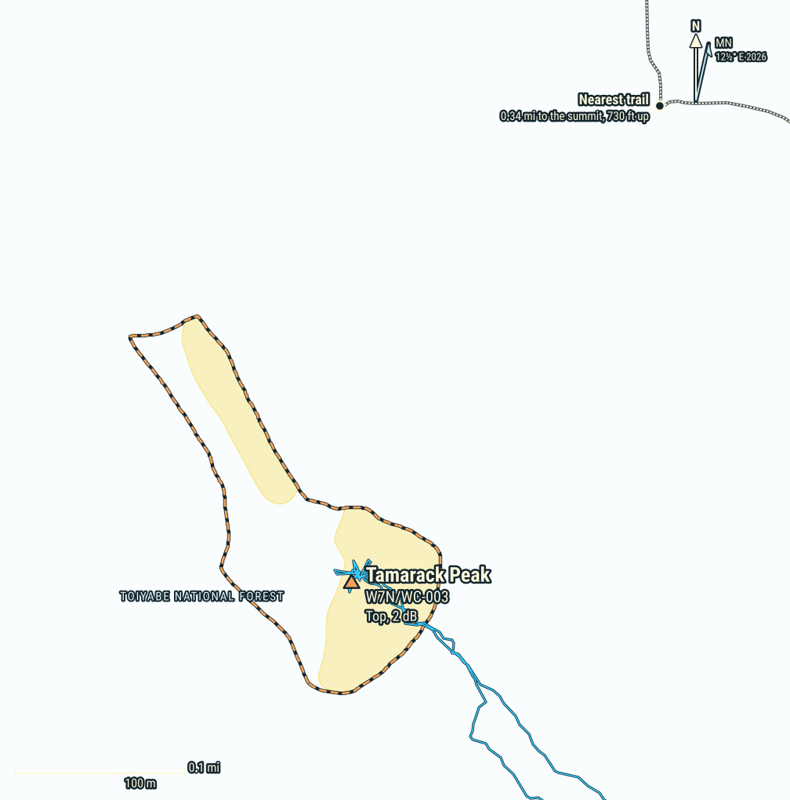
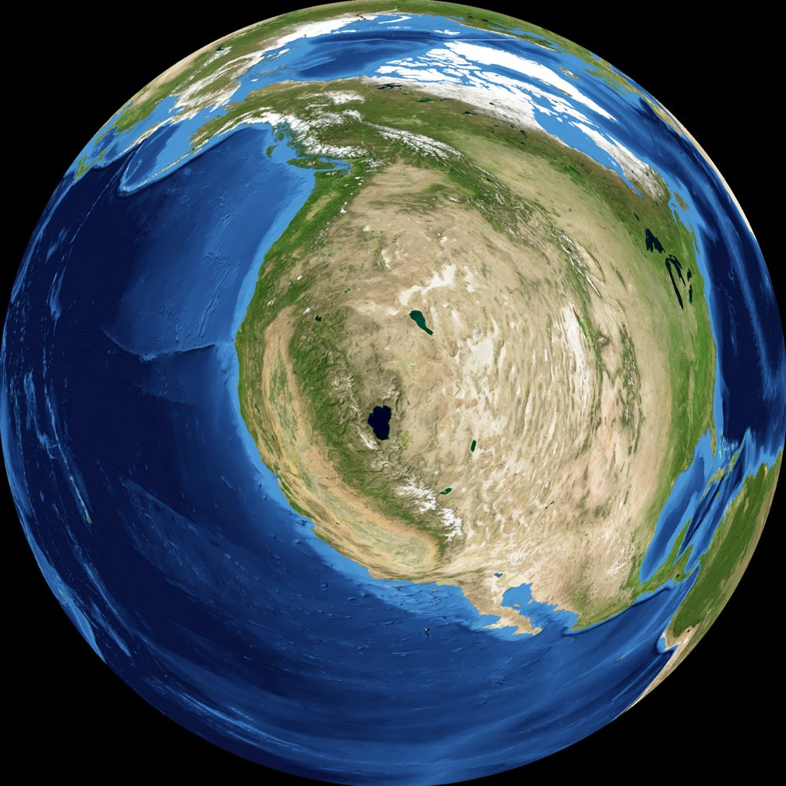
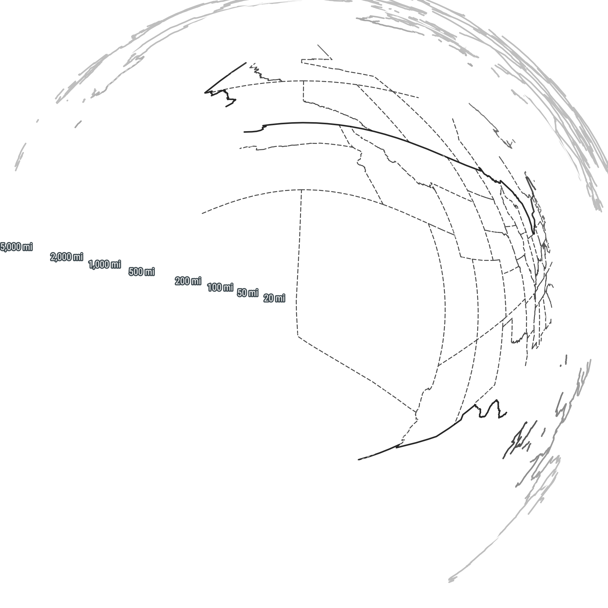

Tamarack Peak W7N/WC-003
Summit
- Summit
- W7N/WC-003 · Peakbagger
- Points
- 10
- First activation
- K7MAS, 18 May 2012
- Elevation
- 9,897′ (3,017 m)
- Prominence
- 503′ (153 m)
- Isolation
- 1.1 mi (1.8 km)
- Region
- NV-Washoe County
- County
- Washoe, Nevada
- Grid
- DM09ah
- Land
- Toiyabe National Forest (Forest Service)
- Designation
- Rose - Galena Roadless Area
- POTA park
- US-4458 Lake Tahoe Basin Management Unit National Forest
Route and radio
- Trailhead
- Tahoe Meadows Trailhead, Mount Rose Highway, 8,900′ (2,713 m)
- Access
- Paved road
- Red tape
- None
- Round trip
- 3.6 mi (5.8 km), 4.5 h
- Elevation gain
- 1,240′ (378 m)
- Transport
- Trail, then cross-country, Class 2
- Cell service
- Top: T-Mobile, Verizon good; AT&T fair · all the way up
- Towers, power lines
- None within 2 km
RF nearby: 1,141 licensed stations within 30 km
What to bring, the cheapest radio that still works here, on the AJ6X RF scale: HF: rung 1 of 4, uSDX or QMX, about $150: anything works. VHF: rung 2 of 4, TH-D75A, about $650: only the best receiver copes (thanks to KDOT, FM radio on 104.5 MHz, 3.3 km E, 112 dBµV/m). Or on a budget: Baofeng + TinyFilter, about $70.
| Station | Service | Frequency | ERP | Where | Terrain | dBµV/m |
|---|---|---|---|---|---|---|
| KDOT | FM radio | 104.5 MHz | 39 kW | 3.3 km E | in sight | 112 |
| KOZZ-FM | FM radio | 105.7 MHz | 39 kW | 3.3 km E | in sight | 112 |
| KWYL | FM radio | 102.9 MHz | 39 kW | 3.3 km E | in sight | 112 |
| KRNO | FM radio | 106.9 MHz | 37 kW | 3.3 km E | in sight | 112 |
| KODS | FM radio | 103.7 MHz | 6.3 kW | 3.3 km E | in sight | 104 |
| KLCA | FM radio | 96.5 MHz | 6.1 kW | 3.3 km E | in sight | 104 |
| WNPU943 | business radio | 462–463.7 MHz | 200 W | 2.0 km W | in sight | 94 |
| WNBP703 | business radio | 461.55 MHz | 400 W | 3.3 km E | in sight | 93 |
| WPMF290 | public safety | 154.13 MHz | 151 W | 2.0 km W | in sight | 92 |
| WQRD263 | public safety | 151.355 MHz | 151 W | 2.0 km W | in sight | 92 |
| KRFN | FM radio | 100.9 MHz | 6 kW | 12.9 km NE | in sight | 92 |
| WRM306 | business radio | 460.9 MHz | 360 W | 3.2 km E | in sight | 92 |
Field strength at the summit from each station's power and distance, less an estimate of the terrain in between. A rough guide, by a rung either way: antenna patterns aren't known, and the noise from a site's equipment is in no licence. Data: FCC licences (2026-10-31), NOAA Weather Radio, OpenStreetMap.
Further down: Map · Aerial photo · QSO map · Log
Cell service, 4G, from the carriers' maps: good fair weak
Tamarack Peak is the quiet neighbour of Mount Rose, just above the Mount Rose Highway between Incline Village and Reno, in the Toiyabe National Forest, with Lake Tahoe below and Mount Rose right next door. A trail most of the way, then up the slope to a rocky top with old whitebark pines.
I’ve been up three times, and the first time is one of the reasons I’m still doing SOTA.
By April 2022 I had been at it for half a year: 55 activations on 36 summits, all in and around the Bay Area, and 73 points to show for it. The summits worth 2 points or more I had mostly done twice already, once in 2021 and again after New Year. At that rate, the 1,000 points for Mountain Goat were another seven or eight years away.
Then, almost as an afterthought, I found myself in Incline Village in early April. On the map, Slide Mountain and Tamarack Peak looked like the easier ones nearby, and the activation reports sounded great. (Only later I realized I had just missed the winter bonus.) At the trailhead I looked both ways, and Tamarack looked nicer. I checked later: it is, no contest.
10 points in one afternoon, my first summit worth more than 4. And a different way to have fun: new places, bigger mountains, spectacular and different from anything in the Bay Area, and points that actually add up.
Getting there
The hike starts at the Tahoe Meadows Trailhead on the Mount Rose Highway (NV-431), just below the pass, at about 8,900′, the same as for Mount Houghton. From there the Tahoe Rim Trail for a bit, then straight up the mountain.
- When: all year. Some prefer it in winter, with the bonus: be ready for the weather.
- Water: none on the trail. I always bring my own.
- Time: about an hour and a half up for us in 2026, with the kids and a wrong turn, and a bit over an hour down.
- Sun: sunny every time I’ve been there. Bring real sun protection (see 2022).
- Toilets: at the trailhead.
- Dogs: welcome. Most of them head for Mount Rose, though, some all the way to the top.
Trailhead
A big paved lot right on the highway, with restrooms. Worth reading the sign on the way in.


The way up
Follow the trail for a while, then leave it and go up the mountain, Class 2. In summer, the odd use trail seems to go your way for a bit, then disappears. In 2026 we took a wrong turn and had to backtrack: that detour is left off the map.
Summit
A rocky top with a few pines, and room to set up. Lake Tahoe to the south and southwest, Mount Rose right next door, Slide Mountain’s towers to the east. Reno and Washoe Valley stay hidden behind the ridges.


Activations
5 September 2026
- Radio
- Elecraft KX2
- Antenna
- 40m EFHW
- Power
- 5 W
- Activators
- AJ6X (9), KO6MFP (7), KO6MFO (6)
- QSOs
- 22 (1 S2S)
- Bands
- 40m (12), 20m (5), 15m (5)
- Modes
- CW (22)
- On air
- 21:12–21:51 UTC
- Summit to summit
- W6/NC-298
Finally with KO6MFO and KO6MFP. While I put up the antenna, the kids built a log shelter for their mascots. On the air at 2:12 PM on 20m CW: four contacts in four minutes, one of them an S2S with K6EL on W6/NC-298, then JS2TNW from Japan. Then 15m, with JS2TNW again and JH1MXV, and the Reverse Beacon Network had me on skimmers from Alberta to Texas. Then the kids, all CW: KO6MFP 7 contacts, JH1MXV in Japan on 15m among them, and KO6MFO 6, on 40m. 22 contacts for the three of us. Great day, uneventful climb. The next day: Mount Houghton.


8 September 2023
- Radio
- Icom IC-705
- Antenna
- 40m EFHW
- Power
- 5 W
- Activator
- AJ6X
- QSOs
- 11 (2 S2S)
- Bands
- 40m (6), 20m (5)
- Modes
- SSB (11)
- On air
- 21:27–21:50 UTC
- Summit to summit
- W7A/AP-009, W7N/WC-011
After a long Labor Day weekend around Tahoe, six summits in four days, and a short week back at work, I came back on Friday, with an early start from the Bay Area. As nice as the first time. On the air at 2:27 PM on 40m SSB: six contacts, one of them S2S with KI7QEK on W7N/WC-011. Then five on 20m, the last one S2S with N7HG on W7A/AP-009 in Arizona. Then there was just enough time left for Slide Mountain the same evening. A bit overstretched, two hikes in one day straight from sea level.
A reminder: sea level to almost 10,000 feet in a morning is a lot. Take it easy on the first day.
6 April 2022
- Radio
- Icom IC-705
- Antenna
- 40m EFHW
- Power
- 5 W
- Activator
- AJ6X
- QSOs
- 20 (1 S2S)
- Bands
- 40m (18), 15m (2)
- Modes
- SSB (20)
- On air
- 21:34–22:44 UTC
- Summit to summit
- W6/CT-133
There was snow, well packed, and I followed other people’s tracks. I steered well clear of the big drop on one side: the snow was rounded over the edge, and I couldn’t tell whether it was safe, so away I stayed. Then on top, I set up in the snow.
Beautiful sunny day. While I was on the air, quite a few people made the climb, most of them on skis with skins on, all curious what I was doing up there without skis. Then off with the skins and down they went.
On the air at 2:34 PM on 40m SSB, with crystal-clear signals. 18 contacts on 40m, one of them S2S with KX6I on W6/CT-133, and two more on 15m, W9MRH and K3TCU, much farther east. My memory says 40m sounded better then than it does now, in the same season. Propagation? Or more solar inverters and other noisy electronics everywhere: the ARRL lab measured some grow lights more than 30 dB over the FCC limits (ARRL), and I’ve read that some gadgets pass their tests and then ship without the filtering. Maybe.


A reminder: I said earlier that the weather was great. It really was. Also, lots of UV, and I found out the hard way that this neck gaiter did not offer sufficient UV protection. And the wide-brimmed hat? It kept the sun off from above, while the snow sent it right back up from below, under the brim, with interest. That evening my face was on fire, red as a tomato, and it took a week or two for the old skin to come off.
And back
In 2022 the way down was uneventful, until it wasn’t: too many ski tracks going everywhere, I ended up too low and too far west, and had to find my way around the mountain in the snow.

Back in town, the gaiter was promptly returned for a proper one; REI is awesome.
In 2026 the way down was on trails all the way: not lost this time, we just wanted to try the other way too.
I generally avoid hiking in the snow: I don’t have the knowledge, the equipment or the confidence for it. Derek W7DLZ often does this one in winter, with the bonus, and says it’s easier to find the way up in the snow than along the countless use trails.
Map


Cell service, 4G, from the carriers' maps: good fair weak
Aerial photo


QSO map


Azimuthal equidistant, log (linear inside 46 km) distance scale, out to 9,709 km, centred on the summit: every QSO is a straight line, true in direction. Chasers at their location on QRZ, to about 5 km; summit-to-summit contacts at the other summit. 1 QSO without a location left out. Rings: what the skimmers of the Reverse Beacon Network heard of our calls during the activations, each skimmer at the centre of its grid square. Earth: NASA Blue Marble. Note 2.
Log
5 September 2026 · 22 QSOs · 1 S2S
| UTC | Activator | Call | Band | Mode | Summit |
|---|---|---|---|---|---|
| 21:12 | AJ6X | AK5SD | 20m | CW | |
| 21:13 | AJ6X | K6EL S2S | 20m | CW | W6/NC-298 |
| 21:14 | AJ6X | W5ODS | 20m | CW | |
| 21:15 | AJ6X | VE7VAK | 20m | CW | |
| 21:19 | AJ6X | JS2TNW | 20m | CW | |
| 21:22 | AJ6X | AC7P | 15m | CW | |
| 21:24 | AJ6X | JS2TNW | 15m | CW | |
| 21:27 | AJ6X | JH1MXV | 15m | CW | |
| 21:28 | KO6MFP | JH1MXV | 15m | CW | |
| 21:29 | AJ6X | K4QS | 15m | CW | |
| 21:33 | KO6MFP | K6YK | 40m | CW | |
| 21:34 | KO6MFP | KM6AM | 40m | CW | |
| 21:35 | KO6MFP | WB6POT | 40m | CW | |
| 21:37 | KO6MFP | NW7E | 40m | CW | |
| 21:38 | KO6MFP | WA6MTZ | 40m | CW | |
| 21:41 | KO6MFO | K6YK | 40m | CW | |
| 21:42 | KO6MFO | KM6AM | 40m | CW | |
| 21:44 | KO6MFO | WX7OR | 40m | CW | |
| 21:45 | KO6MFO | KD7WPJ | 40m | CW | |
| 21:47 | KO6MFO | NT6E | 40m | CW | |
| 21:48 | KO6MFP | NT6E | 40m | CW | |
| 21:51 | KO6MFO | WN6CX | 40m | CW |
8 September 2023 · 11 QSOs · 2 S2S
| UTC | Call | Band | Mode | Summit |
|---|---|---|---|---|
| 21:27 | KI7QEK S2S | 40m | SSB | W7N/WC-011 |
| 21:27 | WB6POT | 40m | SSB | |
| 21:28 | W6DT | 40m | SSB | |
| 21:29 | N6QQN | 40m | SSB | |
| 21:29 | W7DLZ | 40m | SSB | |
| 21:30 | K6YK | 40m | SSB | |
| 21:35 | K6HPX | 20m | SSB | |
| 21:36 | WW7D | 20m | SSB | |
| 21:37 | KI7WXP | 20m | SSB | |
| 21:38 | ND0C | 20m | SSB | |
| 21:50 | N7HG S2S | 20m | SSB | W7A/AP-009 |
6 April 2022 · 20 QSOs · 1 S2S
| UTC | Call | Band | Mode | Summit |
|---|---|---|---|---|
| 21:34 | K6YK | 40m | SSB | |
| 21:35 | WB6POT | 40m | SSB | |
| 21:38 | K6LDQ | 40m | SSB | |
| 21:39 | N6LHL | 40m | SSB | |
| 21:41 | KE6MT | 40m | SSB | |
| 21:43 | WB7VTY | 40m | SSB | |
| 21:44 | KJ7WGM | 40m | SSB | |
| 21:46 | KL7OF | 40m | SSB | |
| 21:47 | KX6I S2S | 40m | SSB | W6/CT-133 |
| 21:48 | WW7D | 40m | SSB | |
| 22:19 | W9MRH | 15m | SSB | |
| 22:21 | K3TCU | 15m | SSB | |
| 22:31 | K6HZR | 40m | SSB | |
| 22:32 | AB6D | 40m | SSB | |
| 22:32 | W6JMP | 40m | SSB | |
| 22:33 | W7CBR | 40m | SSB | |
| 22:34 | W7SKH | 40m | SSB | |
| 22:35 | K6RIN | 40m | SSB | |
| 22:36 | N0WAE | 40m | SSB | |
| 22:44 | W6DT | 40m | SSB |
Notes
- All of the activation zone is on public land or an access easement. RFI, estimated for a Kenwood TH-D75A on 2 m with its stock antenna: about 2 dB of desense at the top, as quiet as anywhere in the zone. From FCC licences and the terrain, not measured. Photo: USDA National Agriculture Imagery Program (NAIP), from the USGS National Map · land: BLM Surface Management Agency, PAD-US, MAPLand easements · ways: OpenStreetMap, U.S. Forest Service, USGS · activation zone from USGS 3DEP · RFI: FCC licences over USGS 3DEP
- Azimuthal equidistant, log (linear inside 46 km) distance scale, out to 9,709 km, centred on the summit: every QSO is a straight line, true in direction. Chasers at their location on QRZ, to about 5 km; summit-to-summit contacts at the other summit. 1 QSO without a location left out. Rings: what the skimmers of the Reverse Beacon Network heard of our calls during the activations, each skimmer at the centre of its grid square. Earth: NASA Blue Marble.